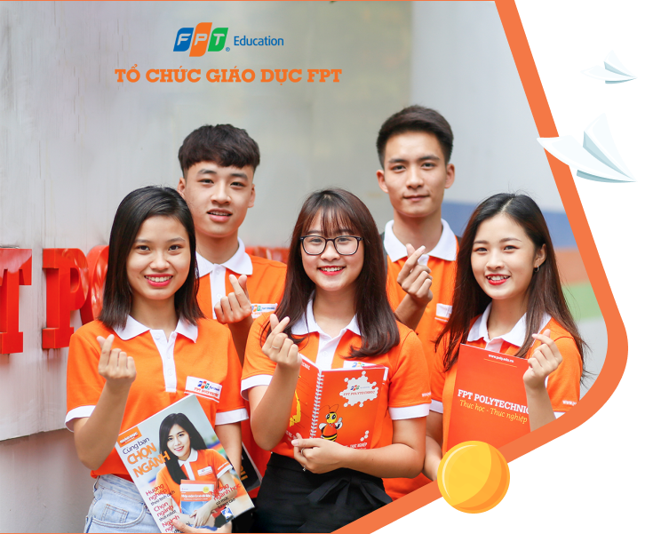

Ngoài việc học và chơi đàn, Nguyên còn có một ban nhạc tên là RedD Band. Chàng trai cho biết ban nhạc xuất phát từ việc làm chung sự kiện đầu tiên là “Vị Tết”, sau khi sự kiện kết thúc thì mọi người cũng về quê để nghỉ dịch. Trong khoảng thời gian đó, anh chàng và những thành viên khác cùng nhau làm những cái video âm nhạc trên trang FU Guitar Club – Câu lạc bộ mà anh chàng đã tham gia từ năm ngoái. Cho đến khi cuộc thi FPTU Talent Show 7 chính thức khởi động, Nguyên và các bạn của mình quyết định làm việc với nhau thêm một lần nữa.
Vào khoảng cuối năm cấp ba là thời điểm quan trọng nhất, đó là lúc mà chúng ta phải chọn một bến đỗ vững chắc cho bốn năm đại học sắp tới. Nguyên cũng không ngoại lệ, anh chàng luôn tất bật với công cuộc tìm kiếm ngôi nhà thứ hai đó. Ngoài ra, Nguyên cũng cho biết thêm, do bố mẹ cảm thấy tính cách của Nguyên phù hợp với môi trường đại học đào tạo theo kiểu quốc tế. Sau khi cùng bố mẹ tìm hiểu kỹ càng, Nguyên đã lựa chọn Đại học FPT. Anh chàng cũng cảm thấy FPT chính là lựa chọn sáng suốt nhất. Cậu bạn cho rằng đây là nơi có thể giúp chúng ta phát triển bản thân và học được thêm nhiều thứ cần thiết